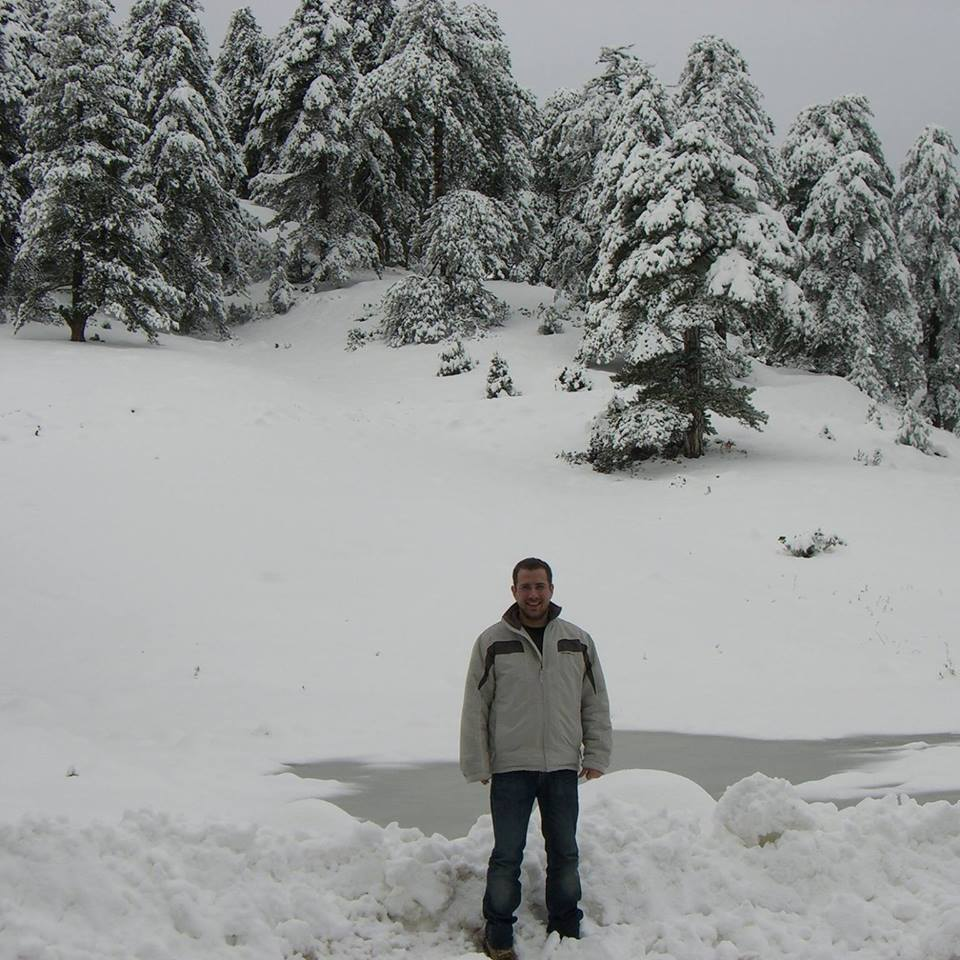

Τα Βιογραφικά μας
Βαγγέλης Γεωργακούδης 2999

Ειμαι Βαγγέλης Γεωργακούδης απο την Αλεξανδρούπολη και ετών 25
Εκπαίδευση:
- 2011 : Απολυτήριο Λυκείου
- 2011-Σήμερα : Μηχανικών Πληροφορικής Καβάλα
- Πτυχίο Αγγλικών
- Πτυχίο ECDL expert
Δεξιότητες:
- Πολύ καλή Γνώση Java,JavaFx,HTML,CSS,C++,JS
- Πολύ καλή Γνώση Android, iOS
- Δίπλομα οδήγησης
Χόμπυ:
- Ταινίες
- Παιχνίδια
- Γυμναστική
- Μουσική
Δημήτρης Γιαρματζής 4279

Ονομάζομαι Δημήτριος Γιαρματζής και κατάγομαι απο την Κομοτηνή. Έχω γεννηθεί το 1985 και εργάζομαι στο δημόσιο τομέα ώς συμβασιούχος ΣΟΧ στον ΟΤΑ β΄βαθμού Κομοτηνής
Δευτεροβάθμια Εκπαίδευση:
- 2003 : Απολυτήριο Ενιαίου - Γενικού Λυκείου
- Πτυχίο Αγγλικών
- Πτυχίο ECDL expert
Προπτυχιακά:
- 2004-2009 : Εφαρμογών Πληροφορικής στη Διοίκηση και στην Οικονομία του ΤΕΙ Δυτικής Μακεδονίας
- 2017- Σήμερα : Πληροφορική
Μεταπτυχιακά:
- 2013-2015 : ΜΒΑ στην Χρηματοοικονομική Διοίκηση
- 2015-2017 : Εφαρμοσμένη Πληροφορική
Επιμορφώσεις:
- 2015 : Ετήσιο Πρόγραμμα της ΑΣΠΑΙΤΕ Σαπών, ΕΠΠΑΙΚ
- 2015 : Πιστοποίηση Braille
- 2017 : Σεμινάριο 160 ωρών Εκπαίδευσης Εκπαιδευτών Ενηλίκων του Εθνικού Καποδιστριακού Πανεπιστημίου Αθηνών
- 2018 : Πιστοποιημένος Εκπαιδευτής Ενηλίκων του ΕΟΠΠΕΠ με αριθμό ΕΒ 38062
- 2018 : Σεμινάριο 400 ωρών στην Διαπολιτισμική εκπαίδευση Προσφύγων και Μεταναστών
Λοιπά στοιχεία:
- 2004 : ECDL Core
- 2007 : Αγγλικά
- 2010 : Εκπληρωμένες στρατιωτικές υποχρεώσεις, ΚΕΤΘ Αυλώνα Αττικής
- 2010 : Δίπλωμα οδήγησης
Οι γλώσσες προγραμματισμόυ που γνωρίζω ειναι οι εξής:
- Πολύ καλή γνώση C
- Πολύ καλή γνώση JavaFX
- Kαλή γνώση HTML,CSS,JS